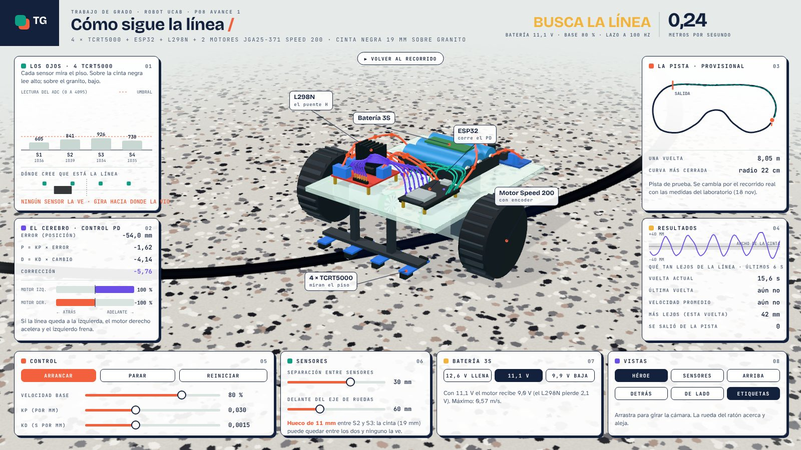
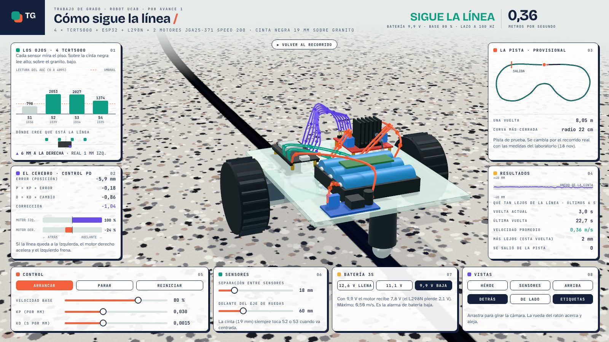

Prototipo P08 · Navegación Óptica · Avance 1
P08: Cómo sigue la línea el robot
Simulador 3D en Vivo
Código Fuente para ESP32 (.ino)
Implementa el lazo de control PD idéntico al de este simulador, listo para compilar en Arduino IDE.
Resultados de Pruebas en Laboratorio
Pendiente por llegada de componentesCalibración TCRT5000 en Granito Real
Registro de lecturas analógicas del ADC (0-4095) comparando piso claro, vetas oscuras del granito del piso 2 y cinta aislante negra a 10 mm de altura.
Esperando hardwareError de Trayectoria (mm)
Medición óptica de la desviación lateral máxima (RMS) respecto al centro de la cinta en curvas de radio cerrado (R = 22 cm) en la maqueta física.
Esperando hardwareVelocidad Media & Tiempo de Vuelta
Campaña de 20 ensayos consecutivos con cronometraje electrónico y medición del impacto de la descarga de la batería (de 12,6 V a 9,9 V).
Esperando hardwareCómo interactuar con el simulador
Por defecto realiza una vuelta autónoma. Puedes modificar las variables en caliente en el panel lateral.
- ArrancaBotones ARRANCAR, PARAR y REINICIAR. Atajos de teclado: espacio y R.
- Ajusta el PDModifica velocidad base, Kp y Kd. Si aumentas mucho Kp, el robot oscilará violentamente; Kd amortigua esa corrección.
- Geometría de sensoresAltera la separación entre módulos y la distancia de avance respecto al eje motriz.
- Voltaje de bateríaFijada en 11,1 V nominales. A 9,9 V el robot reduce velocidad pero mantiene la trayectoria.
Fundamentos del Algoritmo
Lectura y Umbralización
Cada TCRT5000 genera un voltaje leído por el ADC de 12 bits (0 a 4095). Las motas oscuras del granito elevan la lectura; el algoritmo aplica un umbral adaptativo para evitar falsas detecciones.
Controlador PD (100 Hz)
El término Proporcional (P) corrige en magnitud según el error actual. El término Derivativo (D) analiza la velocidad con que cambia el error para frenar a tiempo y evitar que zigzaguee.
Separación Crítica
Si entre los sensores centrales hay más de 19 mm, la cinta de 19 mm puede perderse en el espacio ciego. Colocarlos más adelantados permite anticipar curvas cerradas.
Comportamiento con Batería
Al caer el voltaje de 12,6 V a 9,9 V, el tiempo por vuelta pasa de 17,1 s a 22,5 s. Aun con batería en umbral de alarma, cumple la meta de velocidad de 0,35 m/s.
Resultados en Pista de Simulación
Pista de prueba con perímetro de 8,05 m y curva crítica de radio 22 cm. Valores nominales: base 80%, Kp 0,030, Kd 0,0015, separación 18 mm.
| Condición Evaluada | Tiempo Vuelta | Velocidad Media | Desvío Máximo | Resultado |
|---|---|---|---|---|
| Valores nominales, batería 11,1 V | 19,7 s | 0,41 m/s | 17 mm | Completada exitosa |
| Batería a plena carga (12,6 V) | 17,1 s | 0,47 m/s | 18 mm | Completada exitosa |
| Batería baja / umbral alarma (9,9 V) | 22,5 s | 0,36 m/s | 16 mm | Completada (cumple requerimiento) |
| Base al 100 % PWM | 18,0 s | 0,45 m/s | 26 mm | Completada con oscilación |
| Sensores adelantados a 120 mm | 19,3 s | 0,42 m/s | 14 mm | Mayor estabilidad en curva |
| Sensores separados a 30 mm | 37,0 s | 0,22 m/s | 50 mm | Pérdida de línea el 23% del tiempo |
| Sin control derivativo (Kd = 0) | Fallo en primera curva | Inestabilidad / salida de pista | ||
| Kp insuficiente (0,010) | Fallo en radio cerrado | Radio de giro insuficiente | ||
Datos validados mediante pruebas automatizadas sin interfaz en codigo/pruebas.mjs.
Evidencias Fotográficas de la Simulación
Capturas del comportamiento del modelo 3D. Haz clic sobre cualquier imagen para ampliarla.




Firmware de Producción (ESP32)
El código Arduino reproduce con exactitud la lógica de model.js en el microcontrolador físico. Puede abrirse en Arduino IDE con soporte para el core ESP32 v3.x.
Desplegar visor de código fuente en línea
/* P08 · Seguidor de línea · ESP32 + L298N + 4 × TCRT5000 */
#include <Arduino.h>
const uint8_t PIN_SENSOR[4] = {36, 39, 34, 35};
const uint8_t PIN_ENA = 25;
const uint8_t PIN_IN1 = 26;
const uint8_t PIN_IN2 = 27;
const uint8_t PIN_ENB = 14;
const uint8_t PIN_IN3 = 4;
const uint8_t PIN_IN4 = 13;
const uint8_t PIN_BATERIA = 32;
const float BASE = 0.80f;
const float KP = 0.030f;
const float KD = 0.0015f;
const float SEP_MM = 18.0f;
const int ADC_PISO = 500;
const int ADC_CINTA = 3300;
const float UMBRAL = 0.20f;
const float SUMA_MIN = 0.30f;
const uint32_t PERIODO_US = 10000; // 100 Hz
// ... (Código completo disponible al descargar seguidor_linea.ino)Arquitectura del Simulador 3D
Módulos JavaScript desacoplados que componen la simulación:
- model.js: Modelo cinemático de tracción, lectura de sensores y algoritmo PD.
- pista.js: Trayectoria spline, curvaturas y cálculo de distancia euclidiana a la línea.
- granito.js: Generación procedural del piso de granito y banda aislante.
- sensores3d.js: Geometría 3D de los emisores y fototransistores infrarrojos.
- robot.js y stage.js: Rigging del chasis 3D, iluminación y cámaras.
- pruebas.mjs: Suite de tests sin renderizado visual para validación estadística.